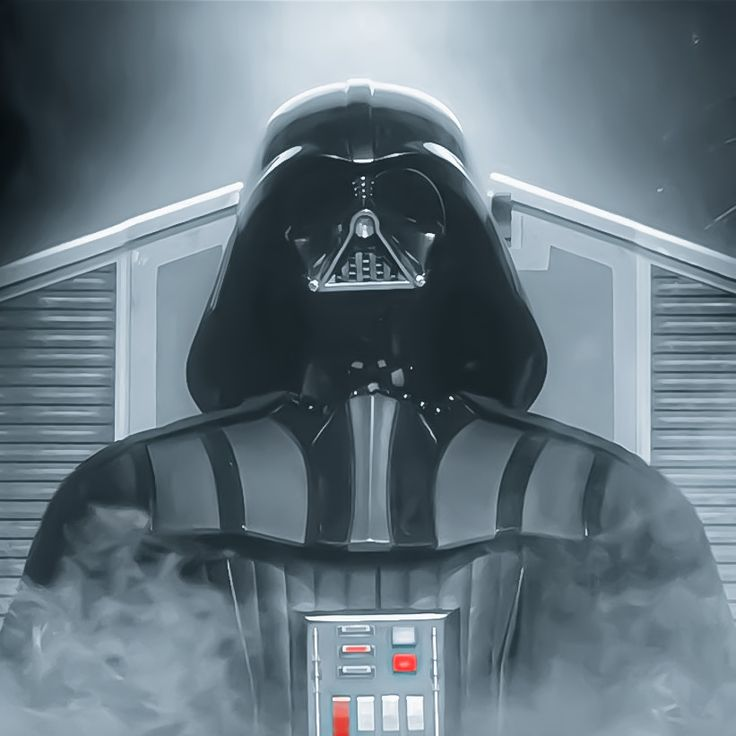
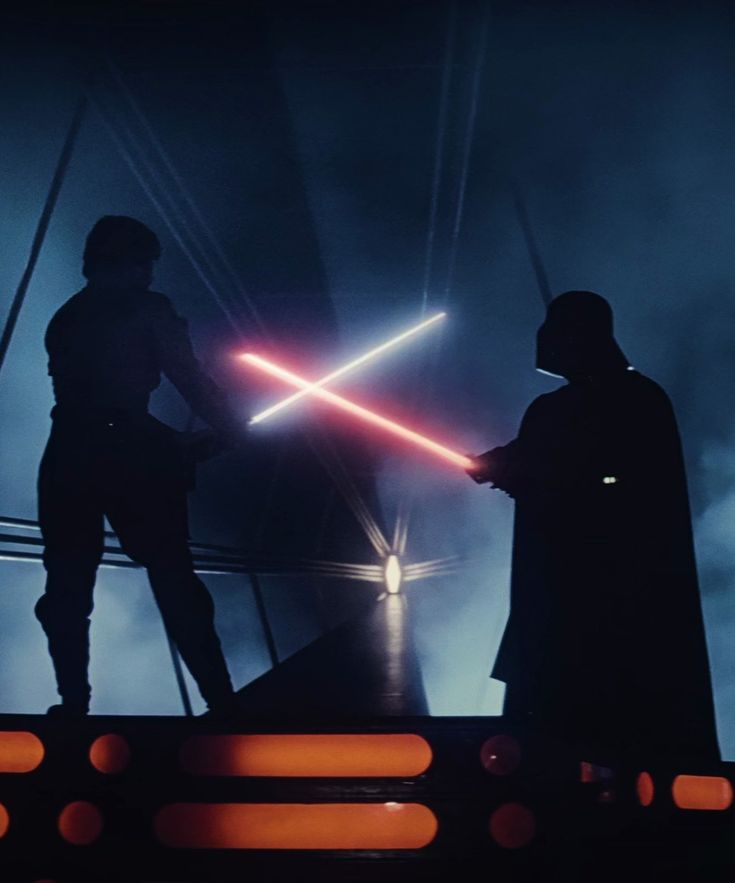
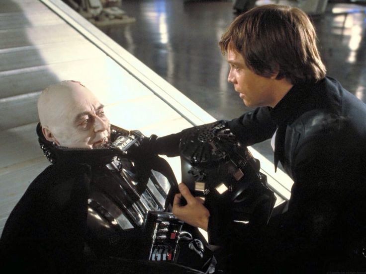

Darth Vader
O braço direito do Império, temido por toda a galáxia. Por trás da armadura e do respirador, ainda existia um resquício de Anakin Skywalker.

O Nascimento do Lorde Sith
Após ser derrotado por Obi-Wan Kenobi em Mustafar, Anakin Skywalker fica gravemente ferido e perde grande parte de seu corpo. Resgatado por Palpatine, ele é reconstruído com uma armadura que se tornaria sua nova identidade.
Ao acordar, Anakin acredita que perdeu tudo o que amava. A dor, a culpa e a raiva de suas escolhas passam a dominar seus sentimentos, enquanto sua antiga vida parece desaparecer completamente.
A partir daquele momento, Darth Vader deixa de ser apenas um novo nome. Preso à armadura e ao lado sombrio, ele passa a representar tudo aquilo que restou após a queda de Anakin Skywalker.

O braço direito do Imério
Como aprendiz de Darth Sidious, Vader se torna uma das figuras mais temidas da galáxia e uma das principais armas do Império. Sua força e experiência fazem dele responsável por perseguir aqueles que ainda se opunham ao novo regime.
Durante anos, Vader ajuda Palpatine a consolidar o domínio imperial e caça os Jedi sobreviventes. Sua presença passa a representar o medo e a autoridade do Império em toda a galáxia.
Por trás da máscara, porém, ainda existiam lembranças de Anakin Skywalker. Vader tentava esconder seu passado e transformar sua dor em raiva, acreditando que abandonar completamente quem havia sido era a única forma de continuar servindo ao Imperador.

A redenção de Anakin
O encontro com Luke Skywalker desperta em Vader sentimentos que ele acreditava ter deixado para trás. Aos poucos, seu filho faz com que ele volte a questionar suas escolhas e o caminho que seguiu durante tantos anos.
Luke acredita que ainda existe bondade dentro de seu pai, mesmo quando todos enxergam Darth Vader apenas como um dos maiores símbolos do lado sombrio. Essa ligação começa a trazer de volta a parte de Anakin que Vader tentou apagar.
Quando Palpatine tenta matar Luke, Vader faz sua escolha final: salva seu filho e se volta contra o Imperador. Ao se sacrificar, ele encontra sua redenção e, em seus últimos momentos, deixa de ser apenas Darth Vader para voltar a ser Anakin Skywalker.